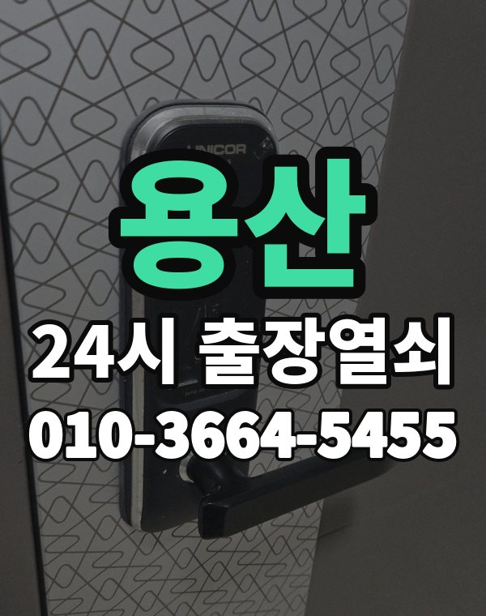

용산 출장열쇠, 이런 동네입니다
용산구는 이촌동, 한남동 아파트부터 후암동, 청파동 언덕 주택과 원룸까지 집 형태가 다양합니다.
오래된 주택은 문틀이 처져 걸쇠가 걸리는 경우가 종종 있습니다.

용산구 출장 가는 동네
- 이태원동
- 한남동
- 이촌동
- 후암동
- 청파동
- 효창동
- 보광동
- 서빙고동
- 원효로동
- 용문동
이태원동 출장열쇠, 한남동 열쇠집처럼 동네 이름으로 찾으셨어도 같은 곳입니다.
적혀 있지 않은 동네도 용산구 안이면 다 갑니다.
용산에서 하는 일
용산 출장, 이렇게 알려주세요
언덕길과 계단이 많은 동네는 차를 세울 곳을 같이 알려주시면 도착이 빨라집니다.
외국인 거주 세대도 거주 확인만 되면 똑같이 진행합니다.
용산역, 삼각지역, 이태원역, 이촌역 근처라고 말씀해 주셔도 위치 잡기가 쉬워집니다.
가까운 역이나 큰 건물, 단지 이름을 같이 알려주세요.
- 도로명 주소나 건물 이름
- 도어락 사진 한 장 (문자로)
- 신분증, 우편물 등 사시는 걸 확인할 것
전화부터 작업까지 순서는 이용안내에 적어 두었습니다.
용산 출장열쇠 관련 글
- 용산구 보광동 도어락 앱 알림이 안 오고 연동이 끊길 때 집에서 점검하는 차례
- 서울 용산 청파동 원룸·주택 이사 첫날, 도어락 초기화하고 새 비밀번호 등록하기
- 서울 용산 한남동 베란다 미닫이문과 방문 잠금장치가 말썽일 때 살펴볼 곳
- 서울 용산 한남동 가게·사무실 출입문 도어락이 안 열리는 아침에 할 일
- 서울 용산 후암동 도어락 교체 전에 문 상태와 비용 안내 방식부터 따져 보기
- 용산구 효창동 도어락 비밀번호가 생각 안 나거나 가족이 바꿔 둔 날 해볼 것
- 용산구 이촌동 열쇠집에 전화하기 전 메모해 둘 질문 목록
- 용산구 이촌동 전월세 집 도어락 문제, 집주인과 세입자가 정리해 두면 좋은 것들
- 서울 용산 이태원동에서 현관 열쇠를 잃어버린 밤, 집에 들어가기까지
- 용산구 이태원동 오래된 현관문이 문틀 처짐으로 안 열릴 때 손보는 순서
- 서울 용산구 서빙고동 가사도우미·돌봄 선생님께 도어락 임시 비밀번호 주는 방법
- 용산구 원효로동 현관 손잡이가 덜렁거리거나 헛돌 때 원인 짚어 보기
- 서울 용산 용문동 우리 집 현관 방범, 10분이면 끝나는 셀프 점검표
용산 출장열쇠 자주 묻는 질문
용산구 끝쪽 동네도 오시나요?
이태원동, 한남동, 이촌동, 후암동, 청파동, 효창동 등 용산구 전 지역 갑니다. 용산구 안이라면 동네 상관없이 갑니다.
용산 늦은 시간 출장도 되나요?
밤이든 새벽이든 받습니다. 어디인지 들으면 언제쯤 도착하는지 바로 말씀드립니다.
문을 못 열면 비용을 내나요?
못 열면 받지 않습니다. 얼마인지는 손대기 전에 먼저 말씀드립니다.
본인 확인은 어떻게 하나요?
사시는 분이 맞는지만 확인되면 됩니다. 신분증이나 우편물을 준비해 주세요.
용산 도어락 새로 다는 것도 되나요?
네, 합니다. 문에 맞는 제품인지 보고, 고칠 수 있으면 수리를 먼저 권합니다.